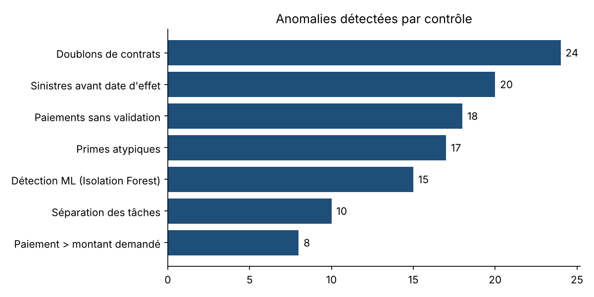
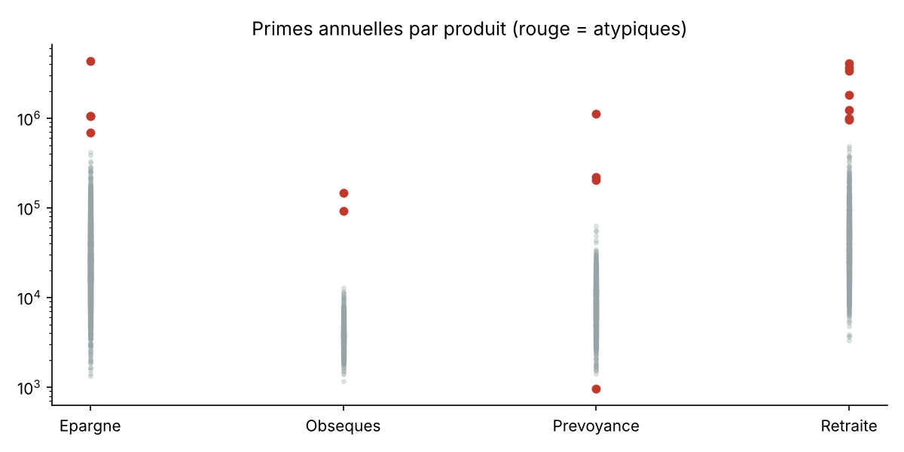
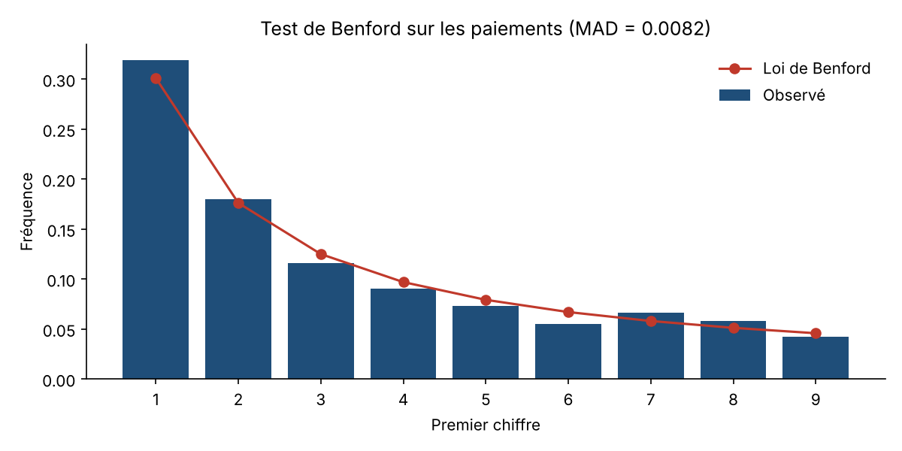

Généré le 24/11/2026 sur 5 012 contrats, 1 800 sinistres et 1 500 paiements.
| Contrôle | Anomalies |
|---|---|
| Doublons de contrats | 24 |
| Primes atypiques | 17 |
| Sinistres avant date d'effet | 20 |
| Paiements sans validation | 18 |
| Séparation des tâches | 10 |
| Paiement > montant demandé | 8 |
| Détection ML (Isolation Forest) | 15 |


